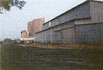

The most impressive pieces of Ohio's history are those which are still standing: abandoned buildings and forgotten places. I've visited quite a few and have so many on my to-do list that I'll never be all the way done. Each of the places I've visited is profiled here, with a little on its history and its current state. At this point I should probably say that I don't condone trespassing, or that it's dangerous to visit these places, but honestly I don't care if you go, as long as you don't vandalize. Just be careful.
|
Fort Hayes
- Columbus - The former Columbus Barracks, decommissioned and left largely to rot, provides refuge for art students and winos alike. Its ghosts still stand guard after more than a century. | |
|
The Columbus School for the Blind
- Columbus - Formerly a progressive institution for the education of the seeing impaired, this sandstone monstrosity retains its stately elegance despite changes in ownership and brushes with the wrecking ball. *RENOVATED* | |
|
Broadview Heights Developmental Center
- Broadview Heights - Northeast Ohio sent its sick veterans, tuberculosis patients, and developmentally disabled children here for decades. Now only the mysterious "Pink Lady" roams its cluttered halls. *DEMOLISHED* | |
|
The House of Nightmares
- Bangs - An enormous building in a tiny town. Formerly the Knox County Poorhouse, then Mt. Vernon Christian College, then the premiere Halloween Spook House in central Ohio. *DEMOLISHED* | |
|
Franciscan Medical Center
- Dayton - The legacy of the Franciscan Sisters of Saint Elizabeth's lives on in this modern hospital complex--closed now, and empty except for the guards...and a few patients who never left. *RENOVATED* | |
|
The Lima Tuberculosis Hospital
- Lima - Relic of Ohio's long battle against tuberculosis; now an abandoned hospital hidden in the woods behind a Lima neighborhood. | |
|
The Ridges Tuberculosis Ward
- Athens - This TB hospital is the last abandoned building on the campus of the former Athens Mental Health Center. | |
|
Junction City Prison
- Junction City - This Perry County prison was a branch of the Ohio State Penitentiary where well-behaved inmates were sent to make bricks. Today it's stripped down and mostly forgotten about--even though Robert Redford and Morgan Freeman did time here 25 years ago. *DEMOLISHED* | |
|
Roseville Prison
- Roseville - Brickmaking satellite of the Ohio Pen and sister to the Junction City Prison. Artificial ghosts remain in the cells while a real one reenacts her suicide from the roof each night. *RENOVATED* | |
|
Peters Cartridge Co.
- Kings Mills - The historic Cincinnati-area munitions plant that survived sabotage by Morgan's Raiders and dozens of explosive industrial accidents still sprawls along the bank of the Little Miami River. | |
|
The Tecumseh Building
- Springfield - This small skyscraper remains a major feature of the Springfield skyline even though its offices are vacant and its doors are barred, while pigeons occupy the penthouse suite. | |
|
Capitol Manufacturing
- Columbus - The former headquarters of a major manufacturing company, and one of the last major industrial buildings in Columbus's revitalized Brewery District. *DEMOLISHED* | |
|
Claycraft Brick Factory
- Columbus - This decrepit brick manufacturing plant lies hidden and nearly unknown in an obscure corner of an industrial park near Port Columbus International Airport. *DEMOLISHED* | |
|
Inland Products Rendering Plant
- Columbus - This crumbling concrete ruin was once a plant run by Inland Products, Inc. Degradable waste collected by Inland was brought here to rot and be processed. Now it's barely used, but they do keep their horrible grease dumpsters in the courtyard out back. | |
|
Lima Trade Center
- Lima - A two-building mini-industrial center in the middle of a vast vacant lot, this relic from the industrial 80s was once home to the Clark Machine Co., which made parts for cranes. | |
|
Nelson Road Water Plant
- Columbus - A huge agitation pool and windowless building criscrossed with catwalks are all that remain of this water utility on Columbus's east side. | |
|
AgriCare Fertilizer Manufacturing Plant
- Columbus - The remains of a fairly ordinary processing plant in the airport-area industrial zone, sorta interesting for its network of ceiling-level catwalks. |  |
|
Landmark Grain Elevator
- Columbus - A towering abandoned landmark on the city's east side; hundreds of thousands of tons of capacity now completely empty. | |
|
Bellaire Gas Light and Coke Works
- Bellaire - The nearly unidentifiable ruins of one of Belmont County's first private utilities, this coal-refining plant once provided gas to the city of Bellaire. | |
|
Millfield Coal Mine Disaster Site
- Millfield - Eighty-two people were killed at the Sunday Creek Coal Company mine in Millfield on November 5, 1930, when gases in the shaft exploded. It remains Ohio's worst mine disaster; the site has been left untouched since the day of the tragedy, as a memorial. | |
|
The Seneca Hotel
- Columbus - This ten-story brick tower was formerly a grand luxury hotel on Columbus's east side. It stood vacant for more than a decade before being rescued, rather last-minute. *RENOVATED* | |
|
The Hartman Hotel
- Columbus - Snake oil salesman Samuel Brubaker Hartman made millions with his "elixir of life," and he served plenty of it in his very own luxurious downtown hotel. Today only the marble staircases and grand ballroom resemble what once was. *RENOVATED* | |
|
The Ross County Retirement Home
- Chillicothe - An abandoned retirement home on Infirmary Lane just north of Chillicothe. A highly unusual layout makes this one worth puzzling over. | |
|
Bieber's Mill
- Powell - A true ruin: The shell of a century-abandoned mill in a town which no longer exists. An utterly fascinating piece of history. | |
|
The Shamrock Motel
- Kirkersville - This combination restaurant and motel served motorists on the National Road in the days before the Interstate Highway System. The gaudy neon sign was left to advertise the former hotel to a Route 40 bereft of cross-country travelers. *RENOVATED* | |
|
The Bon Air Motel
- Mount Blanchard - A pre-interstate motel in the classic style on the old Lincoln Highway outside Lima. Still features the drive-through check-in window and an apartment for the manager's family, as well as the original neon sign - TRUCKERS WELCOME. | |
|
The Heath Drive-In
- Heath - One abandoned drive-in movie theater that's in good enough condition to evoke some real nostalgia. The tilted screen, still upright, is particularly unique, and the ruins of the popcorn machine and the film reel racks are still rusting away inside the concession stand. *DEMOLISHED* | |
|
The Skyline Drive-In
- New Lexington - An abandoned southeastern Ohio drive-in so well hidden in its wooded valley that the concession stand and projection booth are nearly untouched. | |
|
The Show Boat Drive-In
- Springfield - The owner of this forgotten piece of Route 40 Americana used to live in a house right next to the box office, while people stopped on the highway out front to try to sneak a free look at the feature. Located across from the still-thriving Melody Cruise-In. | |
|
The Lake Drive-In
- Mount Orab - A southern Ohio ozoner with marquee sign, concession stand, and rows of speaker poles still intact, but no screen. Did a tornado really hit when they were showing Gone with the Wind? | |
|
The Linden Air Drive-In
- Columbus - Once open year-round, this capital city ozoner now molders at the end of a broken driveway just off Cleveland Avenue. | |
|
The Leatherwood Drive-In
- Barnesville - What little remains of Belmont County's favorite date spot in the 70s occupies a small field in the country surrounding Barnesville. A marquee sign is completely obscured by ivy. *DEMOLISHED* | |
|
Hocking Theater Drive-In
- Logan - Now used by the Logan Lions, it's more a storage shed than a movie theater these days--but they have left the screen, sign, and ticket booth where they were. | |
|
40 East Twin Drive-In Theater
- Columbus - The fire department's annexation of this east side drive-in leaves Columbus with a total of one outdoor theater. Here is a look at what remained of it shortly after it ended its final summer season. *DEMOLISHED* | |
|
Kingman Drive-In Theater
- Delaware - North Columbus's lost drive-in, reduced to little more than a marquee sign in just two years's time. *DEMOLISHED* | |
|
Chippewa Lake Amusement Park
- Medina - On the shore of Lake Chippewa, hidden among the weeds and bushes and trees, the remnants of one of Ohio's earliest amusement parks rotted away in seclusion for decades. *DEMOLISHED* | |
|
Americana Amusement Park
- Middletown - Though it's one of the Buckeye State's original family fun parks, Americana's fate has been uncertain for a number of years. With its roller coasters sidetracked, concessions boarded up, and acres of parking lot empty, it couldn't look more abandoned. *RENOVATED* | |
|
Fantasy Farm
- Middletown - The agriculture-themed kiddie park next door to Americana played host to little ones not quite old enough to enjoy the big rides. Now the petting zoo, bumper cars, and steam train are gone. | |
|
The Rainsboro Theater
- Rainsboro - This extremely decrepit two-story theater building once served as a meeting house for its tiny southwestern Ohio village, as well as a vaudeville-era theater. Now grass grows on the second floor and entire walls fall apart at a touch. | |
|
The Cincinnati Subway
- Cincinnati - The Queen City's most infamous public works project was the subway system begun in the 1920s in a drained canal bed. Financial problems prevented its completion, but the tunnels still snake between mostly-finished stations under downtown Cincinnati. |

|
|
The Haydenville Tunnel
- Haydenville - One of the most fascinating little towns Ohio has to offer, Haydenville ("Ohio's last company town") teems with brick houses built for the employees of the brick-and-tile factory that owned everything. Now the plant is gone but the houses remain--as does this weird little piece of industrial detrius, tunneling half a mile beneath the Hocking Hills. Haunted, too. | |
|
Nelsonville Trainyards
- Nelsonville - Rusty old stripped-out cars from the Hocking Valley Scenic Railroad are put into retirement on this siding behind an apartment complex in Nelsonville. | |
|
New Straitsville Public School
- New Straitsville - DeRolph v. Ohio emptied a lot of truly miserable school buildings in the poorer parts of the state, and there's none poorer than Perry County. New Straitsville's old public school educated eight generations of miners before closing its doors. *RENOVATED* | |
|
Somerset Township Public School
- Temperanceville - A local farmer owns this disintegrating consolidated public school in Noble County. Ceilings collapse into classrooms whose students have long since grown up and moved on. | |
|
The Higginsport School
- Higginsport - A giant, gothic school was built in 1880 for this burgeoning Ohio River town. Only recently was it vacated--and it's still not all that vacant. | |
|
Hartman Farm Schoolhouse
- Columbus - S.B. Hartman's "largest functioning farm in the world" was served by a tiny schoolhouse on State Route 23. It sits smothered in weeds and ivy, just down the road from the schools which replaced it. | |
|
Route 586 Schoolhouse
- Reform - Formerly a school and then a private home, it educated the children of a town which no longer, strictly speaking, exists. | |
|
Wild Rose Schoolhouse
- Mechanicsburg - Inside this burnt-out one-room schoolhouse in west central Ohio you'll find rusty desks and chairs left over from the last time classes were held. A plaque on the building still gives its odd name. | |
|
Franklin Castle
- Cleveland - "Ohio's Most Haunted House" keeps its secrets on Franklin Avenue in inner-city Cleveland. After an arsonist sent it up in flames it stood vacant for more than a year, wide open and available for midnight ghost hunts. *RENOVATED* | |
|
Mudhouse Mansion
- Lancaster - The the period architecture of this lovely Fairfield County farmhouse can't be the only reason it's such a popular destination; numerous restless spirits and an angry, vigilant owner have done nothing but add to its allure. *DEMOLISHED* | |
|
Prospect Place
- Trinway - This historic Muskingum County plantation house has been restored and turned into a bed and breakfast by a descendant of the original owner. For years it's been famous locally as haunted. *RENOVATED* | |
|
The Sidwell House
- Avondale - Screams at midnight and ghostly faces in the windows are a few of the horror stories told about this Zanesville-area gingerbread house. The Sidwell children themselves shed some light on the truth behind the legends. *RENOVATED* | |
|
The Prairie-Brock House
- Jeffersonville - A large farmhouse in the middle of a cornfield near Prairie and Brock Roads, turned into a storage shed by the current owner for baled hay and other weirdness. | |
|
The Renick Farmhouse
- South Bloomfield - Longtime Pickaway County residents the Renicks own this stately hilltop farmhouse across from their family farm market. It's been deserted for years...except for the occasional transient guest. | |
|
The Danville Road Farmhouse
- Newport - Only wasps occupy this modest farmhouse on a lonely stretch of country road between London and Mount Sterling. A skeletal barn out back indicates how long it's been since people lived here. | |
|
SR 104 Farmhouse
- Grove City - Long-deserted and falling apart brick by brick, this overgrown relic of a farmhouse sits just past the outer ring of Columbus development. | |
|
The Logan Round House
- Logan - One man's dream of hurricane-proof housing became "Stewart's Folly" when his prototype fell into ruin. Now a three-story concrete sphere with windows and a garage confuses travellers just outside Logan. | |
|
The M.M. Crites Octagon House
- Circleville - The incredible ocatagon-shaped farmhouse. Its architecture has to be seen to be believed--pie wedge-shaped rooms, a spiral staircase, an octagon-shaped lookout at the peak of a pointed roof. Utterly bizarre. *RENOVATED* | |
|
The Haunted Woods of Old Xenia Road
- London - The ghosts said to haunt this patch of Madison County woods might have something to do with the ancient, possibly Amish barns scattered throughout. | |
|
Crate City
- Columbus - A Columbus moving company has discarded its eight-foot wooden crates in the same fenced-in lot for more than twenty years. Their constantly shifting stacks and piles make it a maze that's never the same place twice. *DEMOLISHED* | |
|
The Aetnaville Bridge
- Martins Ferry - Former highway bridge to Wheeling Island now carries joggers, bicyclists, and pedestrians along its rusty span across the "back river." | |
|
The Bellaire Interstate Toll Bridge
- Bellaire - Built in 1926, this now-ruined bridge once carried commuters across the Ohio River to Benwood, West Virginia for a nickel. It closed in 1991 to make way for the rerouted State Route 7, but its rusty, drooping corpse still spans the river. |

|
|
King Gambrinus
- Columbus - The jolly old king who invented beer guards the entrance to Columbus's Brewery District with a mug in one hand and his foot propped on a barrel of ale--a relic of the Gambrinus Brewing Company. *RENOVATED* | |
|
Third Avenue Drainage System
- Columbus - A trip through the overflow pipes beneath Third Avenue in Columbus's Victorian Village. | |
|
The Gates of Hell Drainage System
- Columbus - The elaborate metal framework and wide concrete channel at one end of this drainage pipe make it popular with skateboarders and graffiti artists. |
HOME
forgottenohio@yahoo.com
facebook.com/andy.henderson.319